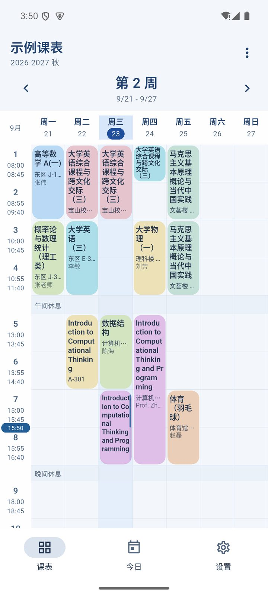
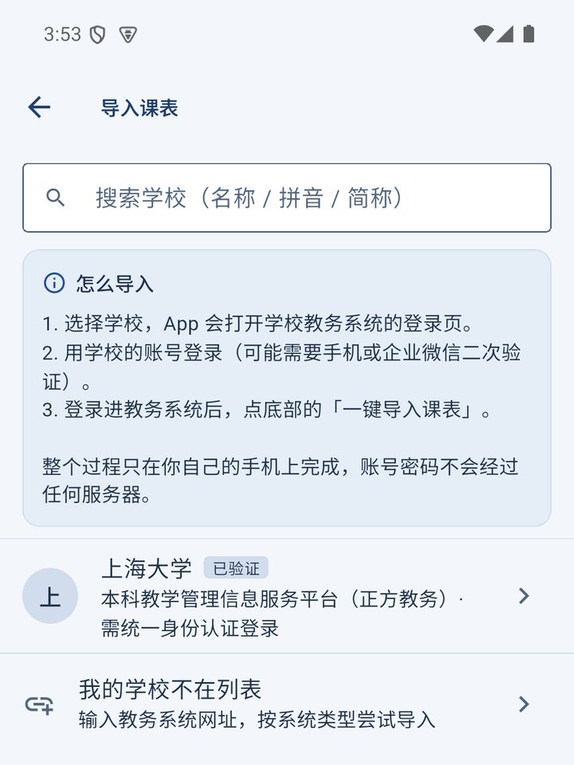
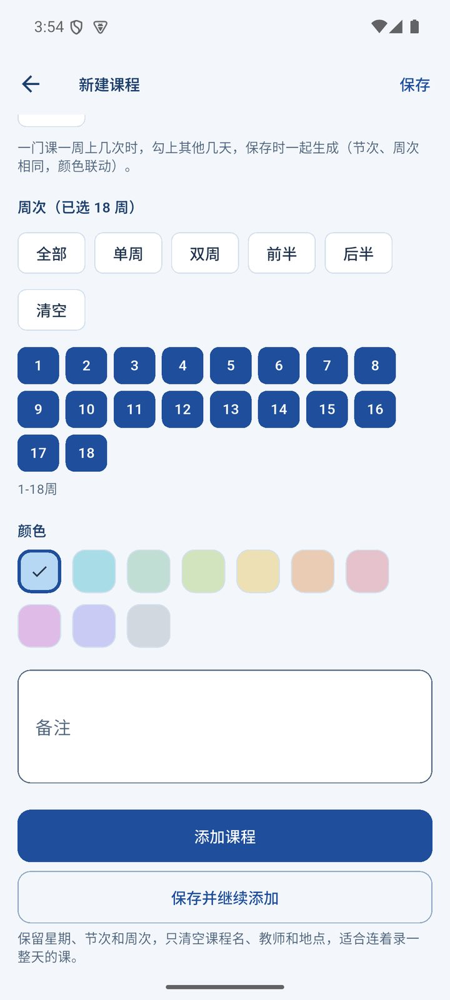
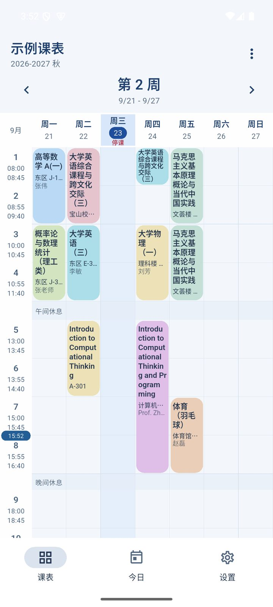
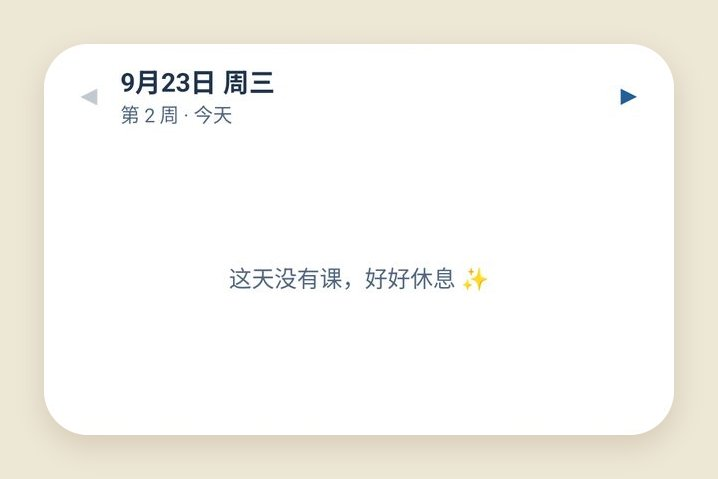
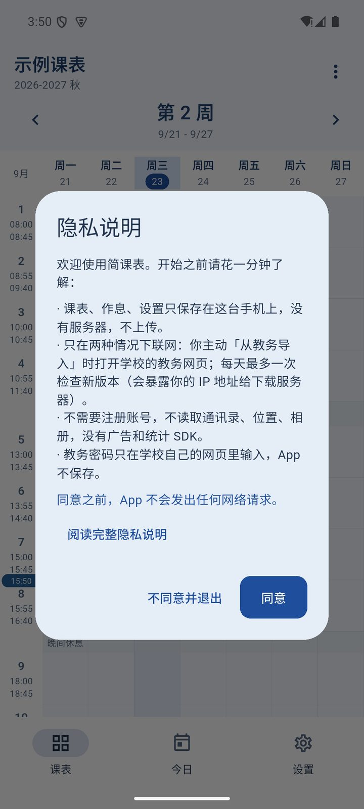

简课表
简课表是一个安卓课程表 App：在学校的教务网页里登录，点一下，这学期的课就进了手机。
不用再一格一格手抄。没有广告，不用注册，也没有服务器，课表只存在你自己的手机里。
一键导入只支持正方新版教务（网址里带 /jwglxt），目前只在上海大学实际验证过。导不进来也可以手动录入，一学期大约十分钟。我的学校能用吗？
2018 年以后的安卓手机基本都能装；纯血鸿蒙要借卓易通，还没实测过；iPhone 装不了。个人开发，不是学校官方出品。
不用再对着教务网页一格一格抄
课表本来就在教务系统里，问题是它只在网页上。
登录教务，截一张课表图，再打开课程表 App，把每门课的名字、教室、节次、单双周一格一格抄进去。
在 App 里打开学校的登录页，用自己的账号登录，点「一键导入课表」。导入前有预览页，可以逐项核对。
手动录也很快，一学期大约十分钟。录入界面专门为连续录课做过。
主要功能
下面的截图都来自 v1.3.0。

周课表 一周七列
周一到周日一屏排开，今天那一列整列高亮。左边是 1 到 12 节和每节的上下课时间，蓝色的时间标记就是「此刻」。午间、晚间休息带单独画出来。
截图用的是示例课表。

教务一键导入 正方新版教务
选学校可以按校名、拼音或拼音首字母搜索。标「已验证」的学校是开发者实际走通过的；不在列表里的学校，输入教务系统的网址，App 认出是正方新版教务（网址里有 /jwglxt）就按实验模式试。
- 账号密码直接发给学校，App 不读取、不保存；短信验证码、滑块在页面里照常完成。
- 学校支持企业微信、微信、QQ 扫码登录的，点按钮会跳到对应 App 确认。
- 导入后默认清掉教务网页的登录状态，别人拿到你的手机也进不了教务。
- 预览页会提醒你核对姓名、学期、开学日期和被跳过的课。

导不进来，也能很快录完 手动录入
暂时不支持一键导入的学校，手动录入一学期大约十分钟，界面专门为连续录课做过：
- 在周课表上长按空格子，直接新建这一天、这一节的课。
- 「保存并继续添加」：保留星期、节次、周次，只清空课名、教师和教室。
- 「复制到其他星期」：一门课一周上几次，勾上几天一次生成。
- 教师、教室输入时提示本课表里用过的值。

调休和停课，按日期设一次 1.3.0 新增
国庆后的周六「按周一的课上」、运动会停课、某天补第 7 周的课，在学期设置里按日期加一条就行。
- 三种写法：停课；按某个星期上课（可同时指定第几周）；指定周次。导入后也会按学校校历提示一键套用。
- 周课表的列头会标「休」或「补」，长按列头即可快速设置。
- 桌面小组件和上课提醒跟着一起变。
截图里把 9 月 23 日（周三）设成了停课，这一列就空了。

桌面小组件 当天课程
小组件显示某一天的全部课程，◀ ▶ 切换日期，课多了上下滑动，也可以把它拉高。每天 0 点自动换到新的一天。
- 在「设置 → 添加桌面小组件」面板里，4×2「当天课程」和 2×1「下一节课」都能一键弹出系统的「添加到桌面」。
- 弹不出确认框的桌面，面板底部会按手机品牌给出手动添加步骤。
截图这天被设成了停课，所以小组件显示没课。系统限制小组件最快约 30 分钟刷新一次，打开一次 App 会立刻刷新。
隐私
简课表只在你的手机上运行，「设置 → 隐私说明」随时可以查看全文。
- 不上传
- 没有服务器、没有账号、没有广告和统计 SDK。课表、作息、设置只存在 App 的私有目录里，卸载即全部删除。
- 只在三种情况下联网
- 你主动「从教务导入」时打开学校的教务网页；每天最多一次检查新版本与更新假期表，只下载两个很小的文件，不带任何个人数据，但对方能看到你的 IP。学校清单内置在安装包里。
- 权限
- 主要只用联网、通知（发上课提醒）和闹钟提醒（让提醒准点）。没有存储、相机、位置、通讯录权限。
- 导入失败时的导入记录
- 在你手机上把学号、手机号、姓名替换成
***后生成文件，发不发、发给谁由你决定，App 不会自动上传。

安装
不是从应用商店装的，系统会拦一下。下面是摘要，菜单名随系统版本可能略有不同。
- 用手机浏览器点上面的下载按钮，下载
jiankebiao-v1.3.0-arm64.apk。 - 点开 APK。提示「不允许安装来自此来源的应用」时点「设置」，打开「允许来自此来源」，返回继续。这个开关只给打开 APK 的那个 App（浏览器或文件管理），装完可以关掉。
- 提示「此应用未经检测 / 可能有风险」是所有商店外 APK 的通用提示，选「仍然安装」。
- 打开 App，直接从首页「从教务导入」开始。
华为 / 荣耀：先退出纯净模式
- EMUI 12、HarmonyOS 2 到 4 默认开着「纯净模式」，会直接拦下商店外的应用。到「设置 → 系统和更新 → 纯净模式」点「退出」（部分版本在「设置 → 安全」里），装完可以再打开。
- 再到「设置 → 安全 → 更多安全设置 → 外部来源应用下载」，给用来打开 APK 的 App 打开开关。
华为纯血鸿蒙（HarmonyOS 5.0 及以后）：借卓易通
- 纯血鸿蒙（包括 6、7）自己不能装 APK，要借华为的「卓易通」。版本号在「设置 → 关于手机」里看，4.x 及更早的版本按上面华为 / 荣耀的办法装。
- 在华为「应用市场」搜「卓易通」装上，第一次打开按提示走完。再点开下载好的 APK，由卓易通安装，装好后在卓易通里打开简课表。能不能装以卓易通的判定为准。
- 简课表在卓易通里还没实测过：能不能正常打开、一键导入和桌面小组件能不能用，都还不知道。一键导入用不了时，可以直接手动录入课程（或从同班安卓同学在「设置 → 备份与恢复」导出的备份文件合并恢复）。
小米 / 红米（MIUI、HyperOS）
提示风险时选「继续安装」，可能要等几秒或登录小米账号。也可以在「设置 → 隐私保护 → 特殊权限 → 安装未知应用」里给对应的 App 打开。
OPPO / 一加 / realme（ColorOS）
安装时会做「安全检测」，扫完点「继续安装」。被拦的话，在「设置 → 安全 → 安装外部来源应用」里打开。
vivo / iQOO（OriginOS）
「设置 → 安全与隐私 → 更多安全设置 → 安装未知应用」，给对应的 App 打开；提示风险选「继续安装」。
校验与兼容
安装包的 SHA-256：4a99d27a30e91c5e10a57978786b2da85c8c20e84c35e9a9bcfee2bea8d78fc6。自己算一遍，和这里一致，就说明下载完整、中途没被改过。
这个安装包只含 arm64 版本，2018 年以后的安卓手机基本都能装。要是提示「解析包错误」，说明手机比较老，要用 58 MB 的通用包，通用包暂时没有公开下载。
从「上大课表」升级
1.0 到 1.2 叫「上大课表」，1.3.0 起改名「简课表」，包名还是原来的 cn.shu.schedule。直接安装新版覆盖，课表、主题、设置都保留。请一直用同一个来源的安装包：签名不同的包系统会要求先卸载旧版，卸载会清空课表，遇到这种情况先在「设置 → 导出备份」。
已知限制
装之前值得知道的几件事。
- 只有 Android 版，没有鸿蒙原生版，也没有 iPhone 版。纯血鸿蒙可以借卓易通装（见安装一节），还没实测过。iPhone 装不了，可以请用简课表的安卓同学在「设置 → 导出到日历（.ics）」生成日历文件发给你，导入 iPhone 自带的「日历」；这只是一份快照，调课后要重新导。
- 一键导入目前只内置了正方新版教务（
jwglxt），只有上海大学经过实际验证。其他使用正方新版的学校可以试，强智、青果、URP 等系统还不支持，请手动录入。 - 没有云同步。上课提醒只排接下来 14 天，打开 App 会自动往后补上；App 内置「导出到日历（.ics）」，导出的是一份快照。
- 检查更新只提示并打开浏览器，不在 App 内下载安装（那需要额外的「安装未知应用」权限）。
版本历史
1.0 到 1.2 名叫「上大课表」。
- 1.5.02026-10-14
周课表全屏作为首页、右上角齿轮进设置（去掉底栏、今日页、首次隐私同意框、图标快捷方式与单张课表文件分享）；开学日期自动化与顶部「第 N 周 ▾」快速校正；按学校校历一键套用放假 / 调休；双卡片添加小组件面板（附各品牌手动步骤）；备份与恢复合一；文案全面白话化。
- 1.4.02026-10-07
上课提醒（本机通知 + 明日预告）；小组件头部显示上课状态、课上完自动看明天，新增 2×1「下一节课」；导出到日历（.ics）；周课表长按列头设调休 / 停课；假期表随检查更新联网刷新。
- 1.3.02026-09
改名「简课表」，面向所有学校：学校清单与「我的学校不在列表」、扫码登录外跳、导入后清除教务登录态、导入记录脱敏导出；调休 / 停课；录入提效（保存并继续、复制到其他星期、历史补全、长按空格新建）；休息带按作息推导；小组件覆盖整学期；检查更新；隐私说明；反馈入口。
- 1.2.02026-09-17
小组件合并为一个可翻页、可滑动的「当天课程」；App 内一键添加小组件；长按图标快捷方式。
- 1.1.02026-09-17
课表视觉重做（课程块排版、「此刻」进度），新增两个小组件。
- 1.0.32026-09-16
课程块改成名字靠上、教室靠下。
- 1.0.22026-09-16
修复课程名截断。
- 1.0.12026-09-16
真机反馈修复（统一身份认证明文跳转等），首次在真实校园网上跑通导入。
- 1.0.02026-09
「上大课表」首个版本：上海大学教务一键导入、周课表、今日页、桌面小组件、主题、备份。